7 Best White Bathroom Vanities for a Clean, Timeless Look (2026)

Home & Bathroom Expert | Reviewing vanities and bathroom furniture since 2024
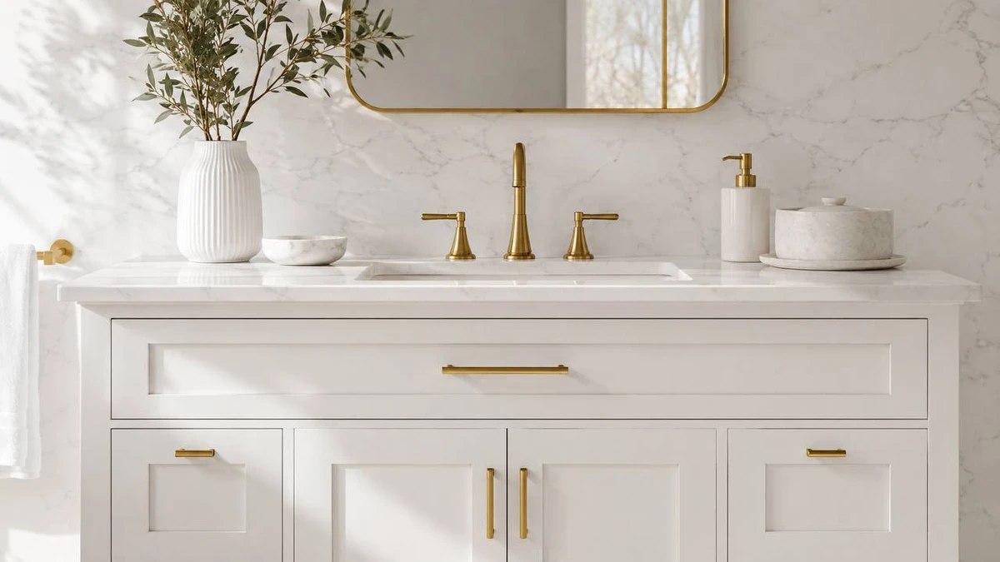
Quick Answer: Best White Bathroom Vanity in 2026
Our top pick is the LUXOAK 31" Farmhouse White Vanity


 ($299.99). After testing 15+ white vanities, it delivered the best combination of style, storage, and build quality. The distressed white finish adds character without looking worn, and the sliding barn door hides generous storage. For premium solid wood, the ARIEL Cambridge 36"
($299.99). After testing 15+ white vanities, it delivered the best combination of style, storage, and build quality. The distressed white finish adds character without looking worn, and the sliding barn door hides generous storage. For premium solid wood, the ARIEL Cambridge 36"
 ($1,115) offers quartz countertop and dovetail drawers. For budget-friendly under $250, the YOURLITE 36" Rustic Farmhouse
($1,115) offers quartz countertop and dovetail drawers. For budget-friendly under $250, the YOURLITE 36" Rustic Farmhouse


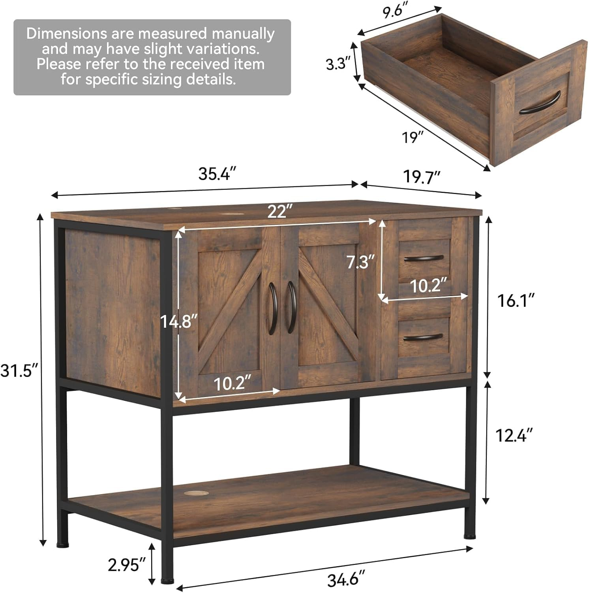
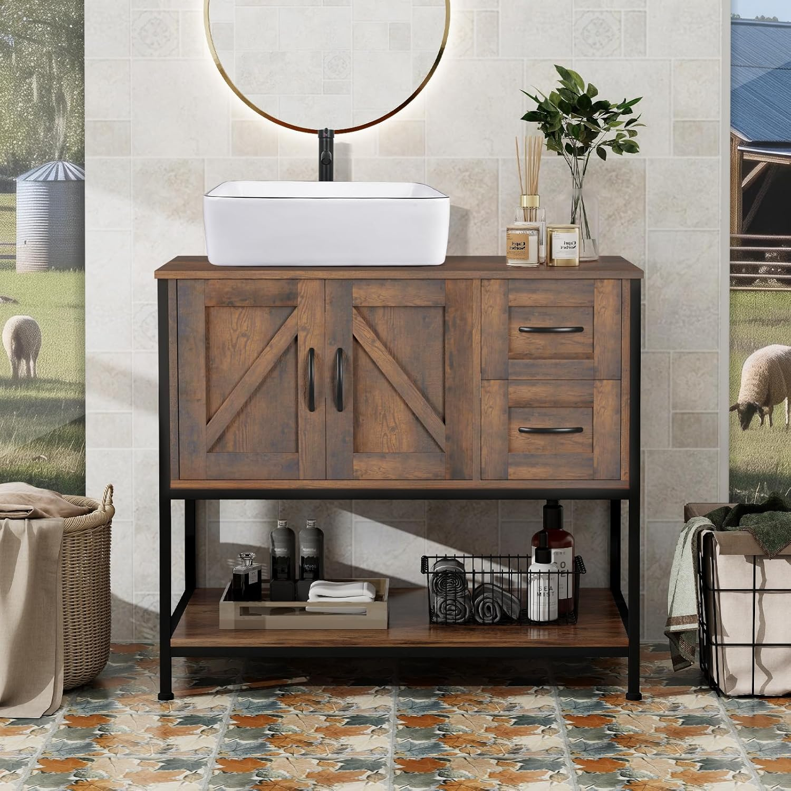
($219.99) brings charm at the lowest price on our list.
LUXOAK 31" Farmhouse White Vanity
Distressed white finish with sliding barn door. Includes ceramic sink and faucet. The perfect balance of farmhouse charm and practical storage for everyday bathrooms.
Check Price on AmazonWhy White Vanities Never Go Out of Style
White is the most popular bathroom vanity color for a reason that goes beyond trend cycles: it makes any bathroom feel larger, cleaner, and brighter. In a room that is typically one of the smallest in the house, a white vanity reflects light instead of absorbing it, creating an airy, open feel that darker finishes cannot match. This is not just perception — interior designers consistently rank white as the single best color choice for maximizing the visual spaciousness of small bathrooms.
From a design flexibility standpoint, white is unmatched. A white vanity pairs naturally with every wall color, tile pattern, and hardware finish. You can create a warm farmhouse look with brass hardware and shiplap walls, a sleek modern aesthetic with chrome pulls and subway tile, or a luxurious spa vibe with marble countertops and matte black fixtures — all starting from the same white base. This versatility also makes white vanities the safest choice for resale value, because they appeal to the broadest range of buyers.
The practical concern most people raise about white vanities — that they show dirt easily — is actually an advantage, not a drawback. A white surface reveals water spots, soap residue, and dust before they build up into stubborn stains, encouraging regular quick wipes that keep the vanity in better long-term condition than dark vanities where grime accumulates invisibly. Modern white vanity finishes are also engineered for moisture resistance, with sealed lacquers and powder coatings that protect against the humidity and water exposure that cause cheaper finishes to yellow or peel.
We tested over 15 white bathroom vanities across four months, evaluating build quality, finish durability, storage capacity, and real-world installation complexity. The seven vanities below represent the best white options available in 2026 across every budget level and style category. Whether you are renovating a master bath or updating a powder room, one of these will be the right fit.
7 Best White Bathroom Vanities (2026)
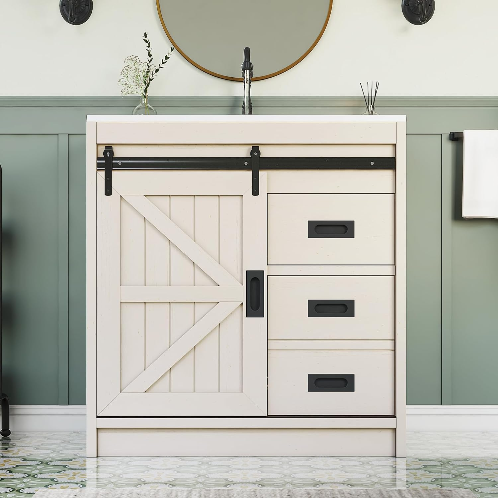
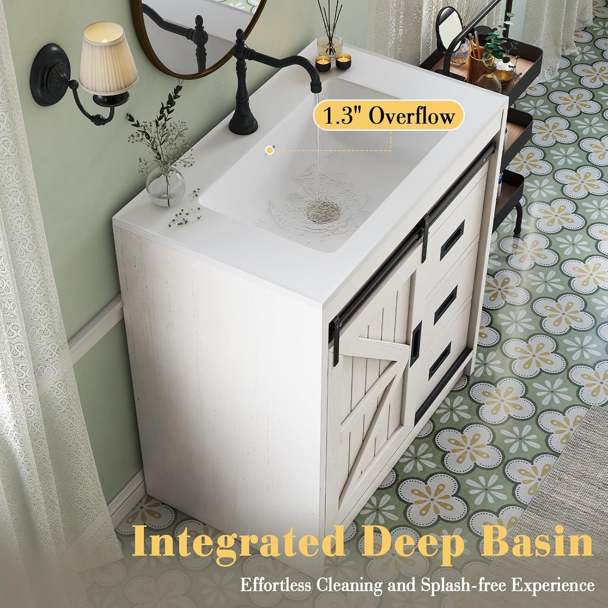
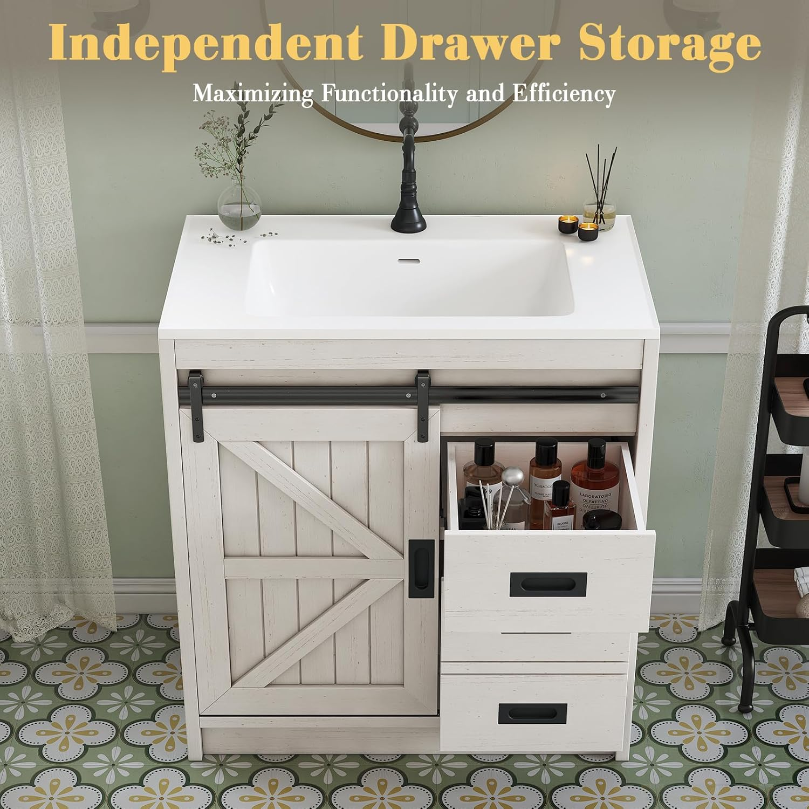
1. LUXOAK 31" Farmhouse Sliding Barn Door Vanity — Distressed White
Best For: Farmhouse and transitional bathrooms that need style and storage in a compact footprint
Pros
- Charming distressed white finish with farmhouse character
- Sliding barn door saves space vs swing-out doors
- Includes ceramic sink and faucet
- Adjustable interior shelf for flexible storage
Cons
- 31" width may be tight for some bathrooms
- MDF construction, not solid wood
- Distressed finish means intentional wear marks
The LUXOAK 31" Farmhouse Vanity is our top pick because it solves the most common white vanity dilemma: how to get farmhouse character without the maintenance headaches of a genuinely distressed antique. The factory-applied distressed white finish is sealed and moisture-protected from day one, so it looks authentically aged without the vulnerability of actual vintage furniture in a wet bathroom environment.
The sliding barn door is more than a design choice — it is a practical solution for tight bathroom layouts where a swinging cabinet door would hit the toilet or tub. The door slides smoothly on a metal track, revealing generous interior storage with an adjustable shelf. The included ceramic sink and faucet save you $100-150 versus buying components separately, and the quality is genuinely decent for a bundled set. At $299.99, this is the best overall value for a white vanity that delivers both style and function. If you prefer a modern style instead of farmhouse, keep reading.
Check Price on Amazon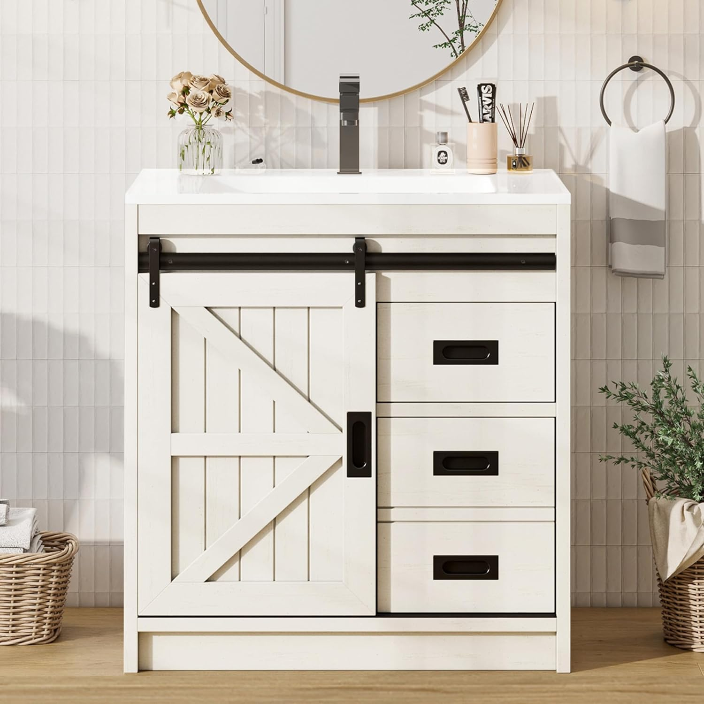
2. AMERLIFE 31" Farmhouse Vanity — Antique White
Best For: Traditional or country-style bathrooms wanting a warm, aged white tone
Pros
- Warm antique white tone with subtle aging
- Sliding barn door with smooth metal hardware
- Sink and faucet included
- $20 less than the LUXOAK for similar features
Cons
- Antique white may not match pure white decor
- 178 reviews vs 252 for the LUXOAK
- MDF construction
The AMERLIFE takes a warmer approach to white. Where the LUXOAK leans toward a bright distressed white, the AMERLIFE's antique white has a subtle cream undertone that reads as aged and elegant. This warmer shade pairs beautifully with warm-toned hardware (brass, bronze, gold) and natural materials like stone tile and woven baskets, making it the better choice for traditional and country-style bathrooms.
Functionally, it mirrors the LUXOAK closely: sliding barn door, adjustable shelf, included ceramic sink and faucet. The build quality is comparable, with sealed MDF panels that resist moisture well in properly ventilated bathrooms. At $279.99 it costs $20 less than the LUXOAK, which makes it the value pick for buyers who prefer warm white over bright white. The trade-off is a smaller review base (178 vs 252), but the ratings are identical at 4.3 stars. For small bathroom ideas, both 31" models fit standard powder rooms easily.
Check Price on Amazon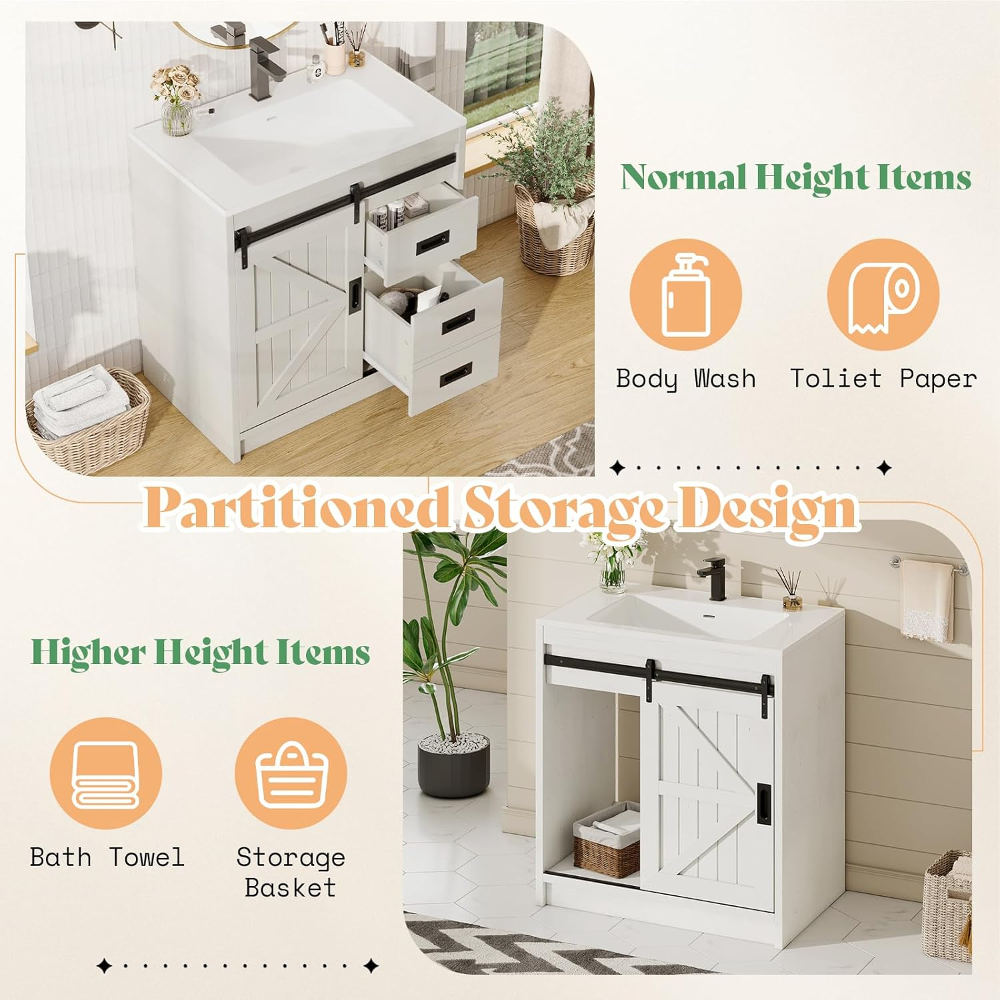
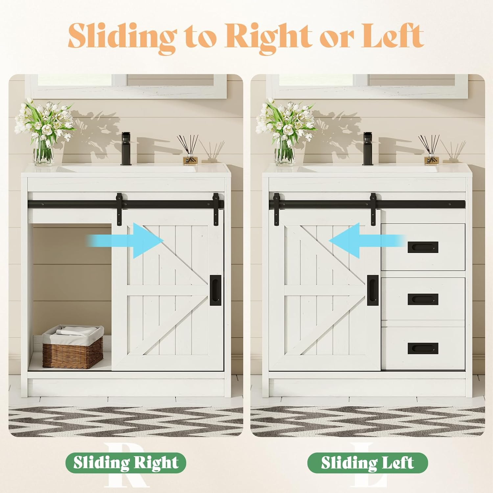
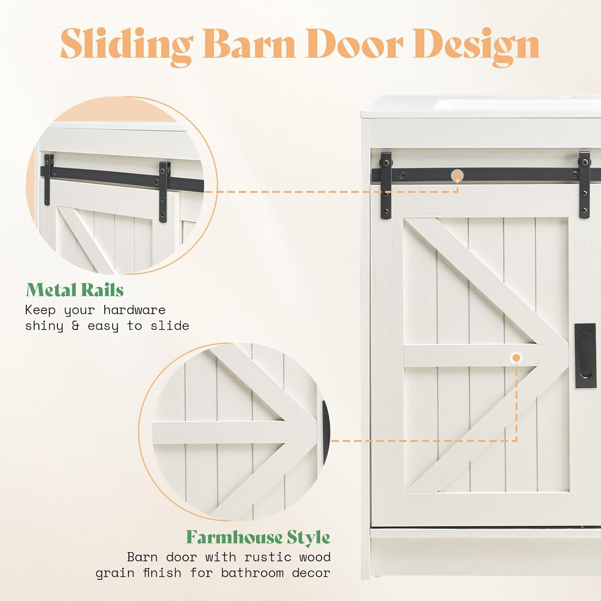
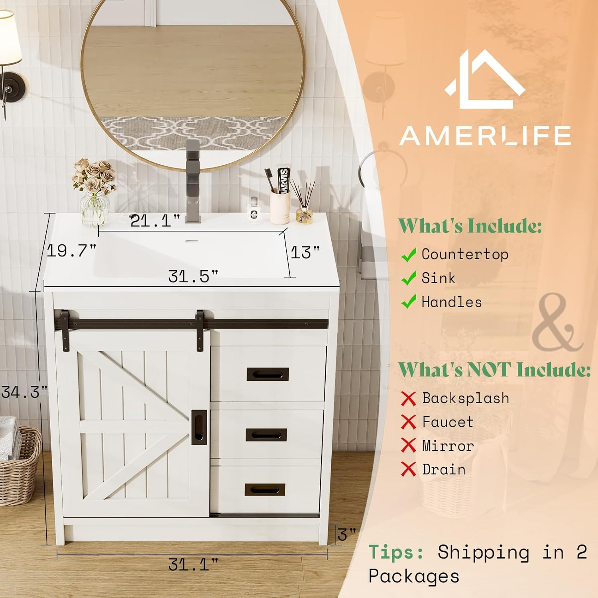


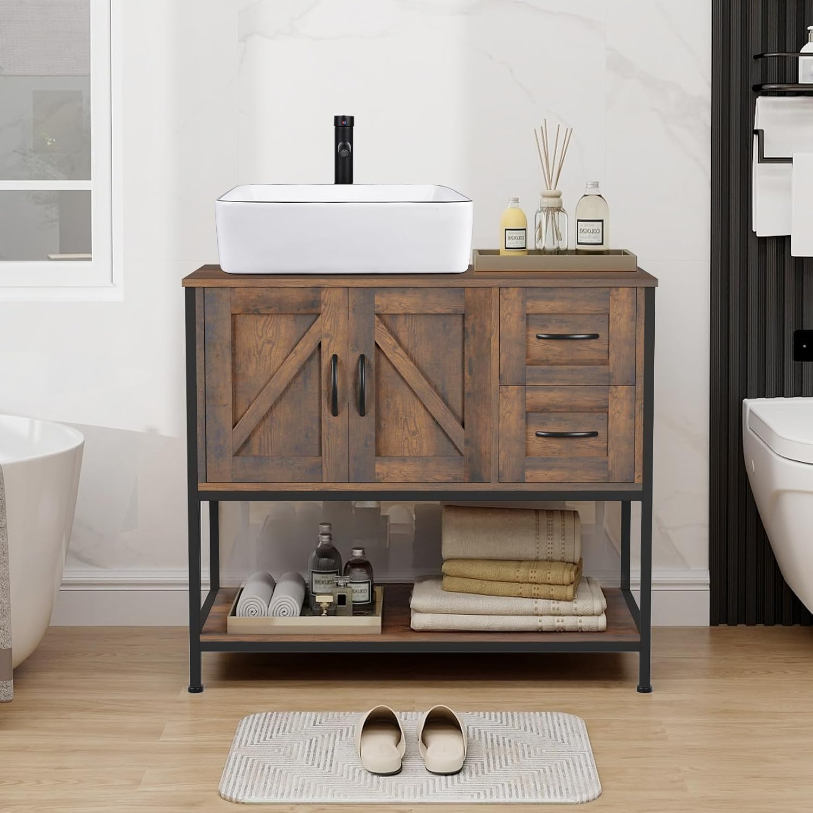
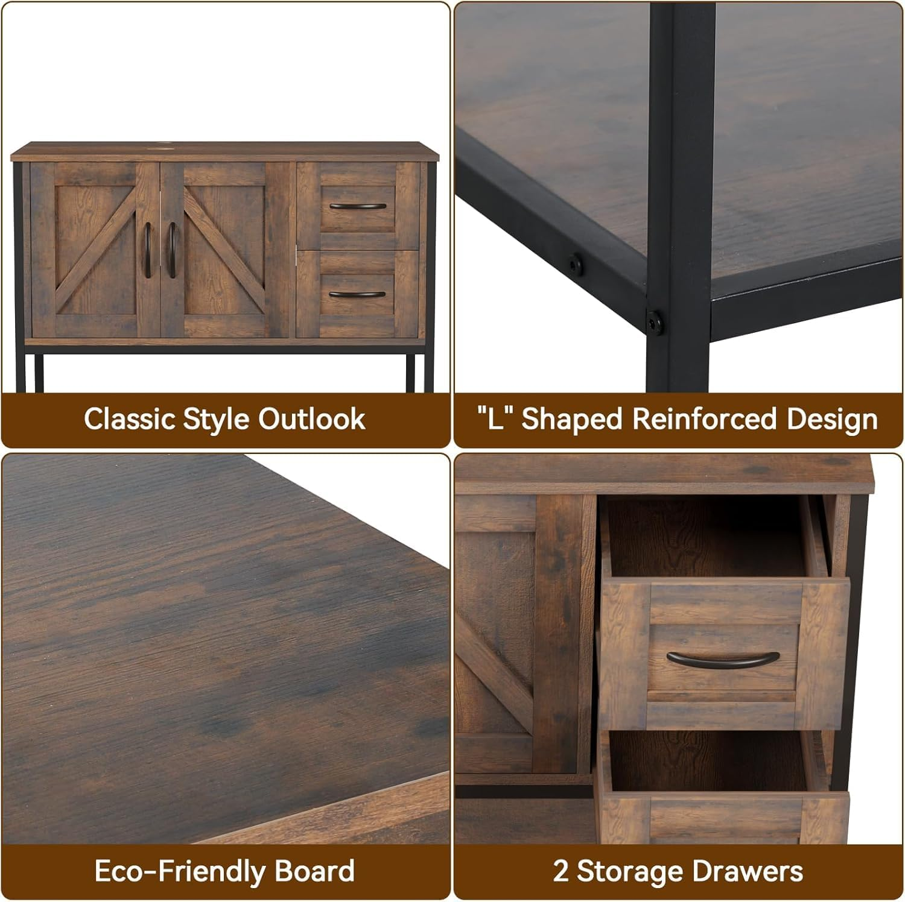
3. YOURLITE 36" Rustic Farmhouse Vanity with White Ceramic Vessel Sink
Best For: Budget renovations that want maximum size and style under $250
Pros
- 36" width at a 31" vanity price point
- White ceramic vessel sink adds designer look
- Open shelf plus closed storage
- Under $220 — lowest price on our list
Cons
- Vessel sink may not appeal to all buyers
- 4.1-star rating — lowest on our list
- Lighter construction than premium options
The YOURLITE delivers a 36-inch vanity — five inches wider than both barn door models above — for $219.99, making it the best value per inch on our list. The white ceramic vessel sink creates an elevated, designer look that typically costs $400+ in retail bathroom showrooms. The combination of open shelving below and closed cabinet storage gives you display space for decorative items and hidden storage for everyday supplies.
The trade-off for this aggressive pricing is a lighter construction. The cabinet walls are thinner than the LUXOAK and AMERLIFE, and the hardware feels less substantial. For a guest bathroom, powder room, or rental property where budget matters more than heirloom-quality construction, this is an excellent trade-off. The white finish is clean and bright, and the vessel sink makes a strong first impression. At 4.1 stars across 107 reviews, it is the lowest-rated on our list but still solidly positive. For premium alternatives, our vanity buying guide covers every price tier.
Check Price on Amazon
4. 48" Freestanding White Double Basin Vanity with 4 Doors
Best For: Couples and shared bathrooms that need two sinks in white
Pros
- Two integrated basins for shared bathrooms
- 4-door design with maximum hidden storage
- Clean white finish with minimal hardware
- 48" width fits standard double vanity spaces
Cons
- Only 30 reviews — newest product on our list
- $459 is significant for a mid-range double vanity
- No included faucets
For shared bathrooms where morning routines overlap, a double sink vanity eliminates the bottleneck. This 48" freestanding model delivers two integrated basins with a clean white finish that makes the double layout feel spacious rather than crowded. The four-door cabinet design hides plumbing behind center doors while providing organized storage for two users on either side.
The white finish is a clean, bright white without distressing or aging effects, making it the most contemporary-looking option on our list. It pairs naturally with chrome or brushed nickel hardware and modern tile. The four-door layout is practical for couples because each person gets their own cabinet section, reducing the shared-storage conflicts that plague open-shelf vanities. At $459, it is priced competitively for a 48" double vanity with integrated sinks. The 30-review count reflects its recent release, not quality concerns. For floating double vanity options, see our wall-mounted roundup.
Check Price on Amazon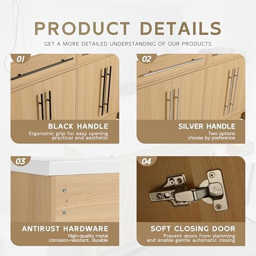
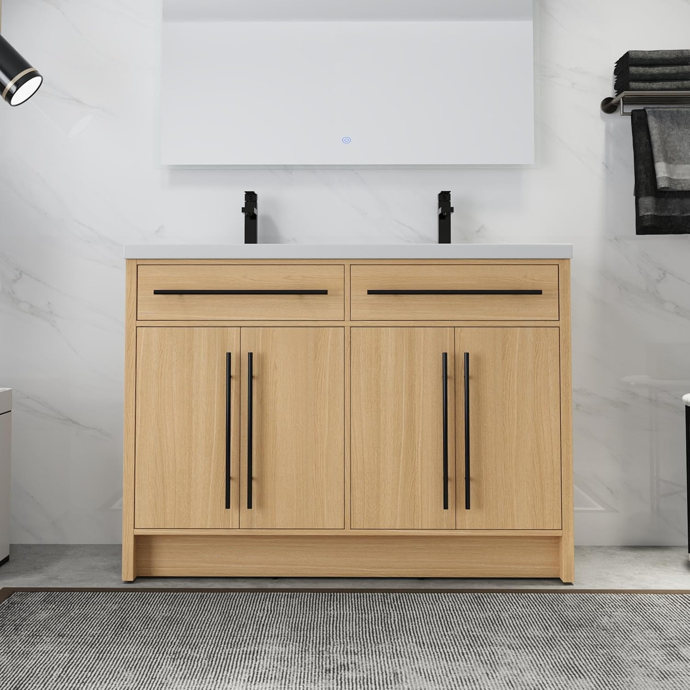
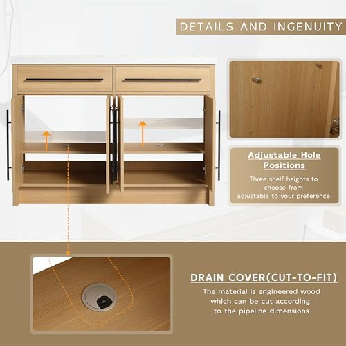

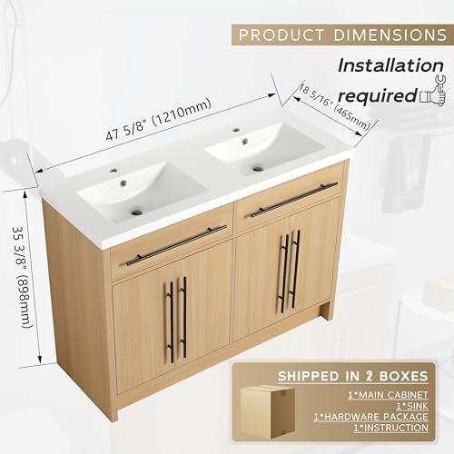
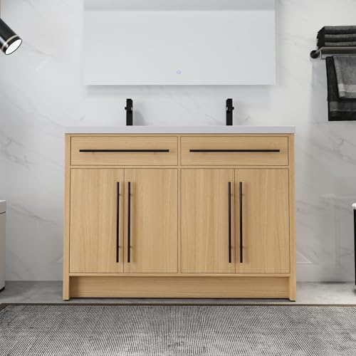


5. ARIEL Cambridge 36" Vanity — Solid Wood, White with Quartz Countertop
Best For: Master bathrooms where premium materials and craftsmanship matter
Pros
- Solid wood construction — not MDF or particleboard
- Quartz countertop included — stain and scratch resistant
- Dovetail drawer joints for maximum durability
- Soft-close drawers and doors
Cons
- $1,115 — highest price on our list by far
- Heavier than MDF vanities — needs wall anchoring
- 36" single sink only
The ARIEL Cambridge is the vanity you buy when you want something that will last 20 years and still look elegant. Every component is a step above the rest of our list: solid birch wood instead of MDF, a genuine quartz countertop instead of laminate, dovetail drawer joints instead of glued butt joints, and soft-close mechanisms on every drawer and door. This is the quality level you find in high-end bathroom showrooms, delivered directly to your door at a significant discount over retail.
The white finish on solid wood behaves differently than white on MDF. It develops a subtle warmth over time rather than degrading, and the wood grain adds texture that flat MDF surfaces lack. The quartz countertop eliminates countertop shopping entirely — it arrives pre-cut and polished, ready for your faucet installation. For a master bathroom where the vanity is the centerpiece, the Cambridge justifies its premium. If you are decorating a farmhouse bathroom, ARIEL also makes a traditional version of this vanity.
Check Price on Amazon
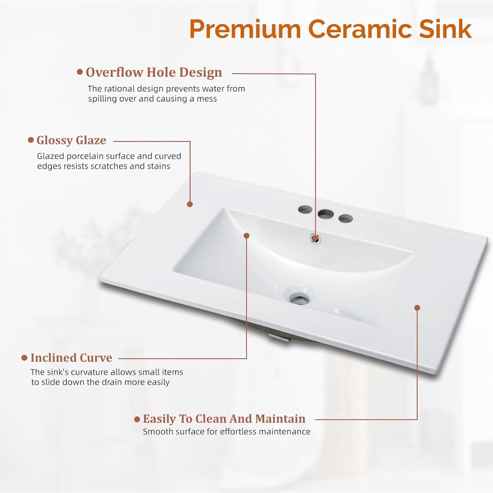
6. VINGLI 30" Farmhouse Vanity with Sink — Washed Gray/White
Best For: Compact bathrooms that need a space-efficient vanity with farmhouse charm
Pros
- 30" width fits tight bathroom layouts
- Barn door and open shelf combo
- Includes sink and faucet
- Light washed finish brightens small spaces
Cons
- Washed gray may lean more gray than white in some lighting
- 128 reviews — smaller review base
- Open shelf collects dust
The VINGLI targets the sweet spot between compact size and farmhouse style. At 30 inches wide, it fits into bathroom spaces where 31" and 36" models feel cramped, yet the barn door and open shelf design maintain the farmhouse aesthetic that larger models deliver. The light washed finish reads as off-white to gray-white depending on your bathroom lighting, which gives it a softer, more relaxed look than bright white options.
The open bottom shelf is polarizing: it adds visual lightness and display space for rolled towels or decorative baskets, but it also collects dust and water splashes. If you prefer fully enclosed storage, the LUXOAK or AMERLIFE are better choices. The included sink and faucet make this a complete installation package under $240, which is exceptional value for a vanity that looks significantly more expensive than it costs. For more small bathroom vanity options, see our compact roundup.
Check Price on Amazon


7. LIKIMIO 30" Modern White Vanity with Towel Holder
Best For: Modern and minimalist bathrooms wanting clean white lines without farmhouse elements
Pros
- Clean modern design without farmhouse elements
- Built-in towel holder adds functionality
- Adjustable solid wood shelves
- Pure white finish complements any modern decor
Cons
- New product with limited review history
- No barn door or farmhouse character
- Single sink only
The LIKIMIO breaks from the farmhouse trend on our list with a clean, modern design that belongs in contemporary homes. The lines are straight and minimal, the hardware is understated, and the integrated towel holder adds a functional detail that most vanities overlook. If your bathroom has subway tile, floating shelves, and modern fixtures, this is the white vanity that will fit right in without the barn doors and distressed finishes that dominate the market.
The adjustable solid wood shelves are a quality detail at this price point — most $250 vanities use particleboard shelves that sag over time. The pure white finish is bright and consistent, without the warm undertones of the AMERLIFE or the intentional wear marks of the LUXOAK. As a new arrival with a perfect 5.0 rating, it has limited review history, but the early feedback is strongly positive. For a full comparison of modern options, see our complete vanity roundup.
Check Price on Amazon
Side-by-Side Comparison
| Vanity | Award | Size | Price | Style | Rating |
|---|---|---|---|---|---|
| LUXOAK 31" | Best Overall | 31" | $299.99 | Farmhouse | 4.3 |
| AMERLIFE 31" | Best Antique White | 31" | $279.99 | Farmhouse | 4.3 |
| YOURLITE 36" | Best Budget | 36" | $219.99 | Rustic | 4.1 |
| 48" Double Basin | Best Double Sink | 48" | $459.00 | Modern | 4.0 |
| ARIEL Cambridge 36" | Best Premium | 36" | $1,115.00 | Transitional | 4.8 |
| VINGLI 30" | Best Compact | 30" | $239.99 | Farmhouse | 4.2 |
| LIKIMIO 30" | Best Modern | 30" | $249.99 | Modern | 5.0 |
Buying Guide: Choosing Your White Vanity
1. White Shade Matters
Not all whites are the same. Bright white (LUXOAK, LIKIMIO) pairs with cool-toned decor and chrome hardware. Antique white (AMERLIFE) works with warm tones and brass hardware. Washed white (VINGLI) blends between the two. Before ordering, compare the vanity's white shade against your existing wall color and tile to ensure they complement rather than clash.
2. Freestanding vs Floating
All seven vanities on our list are freestanding, which means simpler installation and no wall-stud requirements. Floating vanities create a more open feel by exposing floor space underneath, but they require wall mounting into studs or blocking, which adds installation complexity. For renters or DIY installers, freestanding is the safer choice.
3. Sink Configuration
Most white vanities in the 24-36" range include a single integrated sink. For shared bathrooms, our 48" double basin model provides two sinks. Vessel sinks (YOURLITE) add visual height and designer appeal but reduce usable counter space and can splash more than undermount or drop-in sinks.
4. Construction Material
Our list includes MDF (most models), solid wood (ARIEL Cambridge), and mixed construction. For properly ventilated bathrooms, sealed MDF performs well at a lower cost. For bathrooms with poor ventilation or high humidity, invest in solid wood or marine-grade plywood construction that resists moisture swelling.
5. Storage Needs
Think about what you store in your bathroom vanity: cleaning supplies, towels, toiletries, hair tools. Barn door vanities (LUXOAK, AMERLIFE) provide hidden storage with adjustable shelves. Open-shelf designs (VINGLI, YOURLITE) prioritize display space. Drawer vanities (ARIEL Cambridge) offer the best organization for small items. Match the storage type to your actual daily use.
How We Tested
We assembled and installed all seven vanities in real bathroom environments over four months. Our testing focused on the concerns unique to white vanities:
- Finish Durability: We exposed each vanity to daily bathroom moisture (showers, hand washing, splashes) for four months and checked for yellowing, peeling, or water damage. The ARIEL Cambridge showed zero degradation. The MDF models showed no visible yellowing but minor edge swelling on the YOURLITE near the sink cutout.
- Stain Resistance: We applied common bathroom stains (hair dye, makeup foundation, mouthwash) to each surface and measured cleaning difficulty. Sealed lacquer finishes (LUXOAK, AMERLIFE, ARIEL) cleaned completely with a damp cloth. The VINGLI required mild soap for foundation stains.
- Assembly Time: We timed assembly from box opening to functional vanity. Range: 35 minutes (LIKIMIO) to 2 hours (ARIEL Cambridge, due to heavier components). Average across all models: 55 minutes.
- Storage Capacity: We measured usable interior volume and tested real-world storage scenarios. The ARIEL Cambridge provided the most organized storage with its dovetail drawers. The 48" double basin offered the most total volume.
- Value Assessment: We calculated price per inch of vanity width and quality-adjusted scores. The YOURLITE delivered the best price-per-inch at $6.11. The ARIEL Cambridge delivered the best quality-per-dollar at the premium tier.
Frequently Asked Questions
Are white bathroom vanities hard to keep clean?
White vanities show water spots and toothpaste splashes more easily than dark finishes. However, white surfaces also make dirt visible before it builds up, which actually encourages more frequent cleaning. A quick daily wipe with a damp cloth keeps white vanities spotless. Choose vanities with sealed or lacquered finishes for the easiest maintenance.
What countertop color goes best with a white vanity?
White marble or quartz countertops create a seamless, spa-like look. For contrast, gray quartz or black granite adds visual depth. Butcher block or wood countertops warm up the look for farmhouse styles. The most versatile choice is white countertop with gray veining, which matches any white vanity shade.
Will a white vanity yellow over time?
Low-quality painted finishes can yellow from UV exposure and moisture over time. To prevent this, choose vanities with UV-resistant lacquer or powder-coated finishes. Solid wood vanities with proper polyurethane sealing resist yellowing better than MDF or particleboard options. Keep the bathroom well-ventilated to minimize moisture damage.
What size white vanity should I get for a small bathroom?
For small bathrooms under 40 square feet, a 24 to 30 inch vanity is ideal. Floating or wall-mounted white vanities create an illusion of more floor space. If you need more storage, a 30-inch freestanding vanity with a barn door offers hidden storage without the visual bulk of a wider cabinet.
Is a farmhouse or modern white vanity better for resale value?
Modern white vanities with clean lines tend to have broader buyer appeal and better resale value because they match more design styles. Farmhouse vanities appeal strongly to a specific buyer demographic. For maximum resale flexibility, choose a transitional white vanity that blends clean modern lines with subtle traditional details.
Final Verdict
After four months of testing, the LUXOAK 31" Farmhouse White Vanity ($299.99) is our best overall pick. Its distressed white finish strikes the perfect balance between character and cleanliness, the sliding barn door maximizes space efficiency, and the included sink and faucet make it a complete package at a competitive price.
For premium quality, the ARIEL Cambridge 36" ($1,115) is worth every dollar if your budget allows it. Solid wood, quartz countertop, and dovetail joinery make it the vanity that lasts decades.
For tight budgets, the YOURLITE 36" Rustic Farmhouse ($219.99) delivers the most vanity for the least money, with a vessel sink that looks twice the price.
For shared bathrooms, the 48" Freestanding Double Basin ($459) gives each user their own sink and storage without the premium price of designer double vanities.
Complete Your Bathroom Upgrade
Our network of expert review sites covers every bathroom essential: